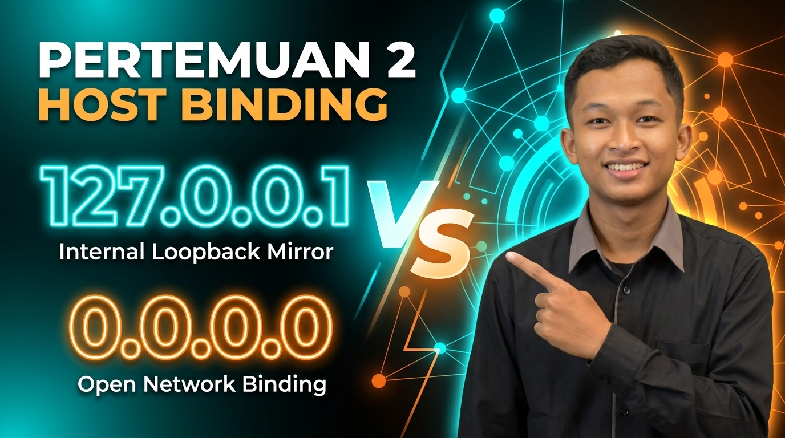

📅 SILABUS 6 PERTEMUAN MODUL
Modul Pertemuan LocalDev Web & Server
Klik kartu di bawah untuk membuka halaman materi khusus setiap Pertemuan!
 PERTEMUAN 1
PERTEMUAN 1
🖥️ Apa Itu Server & Localhost?
Buka Landing Page Pertemuan 1: Memahami Server (Warung Makan) & kata kunci `localhost`.
Buka Pertemuan 1 →
PERTEMUAN 2🌐 127.0.0.1 vs 0.0.0.0 (Host Binding)
Buka Landing Page Pertemuan 2: IP Cermin internal laptop vs Binding 0.0.0.0 untuk pintu luar.
Buka Pertemuan 2 → PERTEMUAN 3
PERTEMUAN 3
📱 IP Local & Akses Web dari HP
Buka Landing Page Pertemuan 3: Mencari IP Local laptop (192.168.x.x) & buka di HP.
Buka Pertemuan 3 → PERTEMUAN 4🚪 Konsep Port Server & Bentrok
Buka Landing Page Pertemuan 4: Analogi nomor pintu kamar server & solusi port bentrok.
Buka Pertemuan 4 → PERTEMUAN 5⚡ Perintah Server di Tool Favoritmu
Buka Landing Page Pertemuan 5: Perintah simpel 1 baris untuk Laravel, Vite, React & Python.
Buka Pertemuan 5 → PERTEMUAN 6
PERTEMUAN 6
🎯 Evaluasi, Quiz & Troubleshooting
Buka Landing Page Pertemuan 6: Simulator jaringan, Quiz interaktif & 8 solusi error.
Buka Pertemuan 6 →